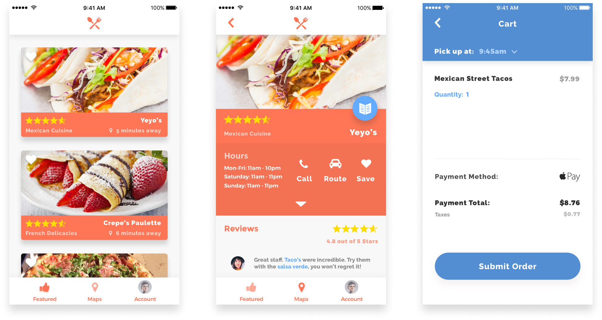

Paycrave
Purpose
A mobile ordering and discovery app for local food truck customers.
Roles
Product Design
Visual Design
Brand & Identity
Summary
When it comes to the food truck experience, mobile technology has left it behind. There is no quick and easy way to find and order food from food trucks using mobile apps today, and most food trucks don’t have the time or resources for making that experience seamless for their customers. That’s where Paycrave comes in.

The Problem
I was inspired by trying to understand the intricacies of ordering food from a mobile app.
In my research, I found that 75% of customers do not visit food trucks regularly. However, 88% of all respondents said that they would definitely eat from them more if a mobile app made the process simpler and more enjoyable.
Finally, users said that the biggest issues were waiting in line to pick up their orders and not being able to pay ahead when ordering.
The Solution
The most important feature for an app like Paycrave, is the seamlessness of the ordering and payment process. Through user research and user testing, I was able to refine these processes into a simple and enjoyable experience.
In my testing, users responded overwhelmingly positive to the experience. Respondents said that the menu quantity selection, and payment information selection made the process enjoyable to use.
Would you like to try a mobile prototype?
The Process
Under the guidance of my mentor, I led the Paycrave project from start to finish. Utilizing user research through user surveys, and trying to understand its competitors through a competitive analysis, research showed an opportunity for Paycrave seeing as there are no apps currently focused on tackling this specific issue.
In helping to build empathy for the users and trying to understand what was needed, user personas were also vital to the process.
In targeting the entire experience, user stories were used to look at all the needs of the customer. Then, I began iterating and simplifying these processes through user flows.
Design
Once user flows were completed, next began understanding the layout of the application. Through wireframe testing we were able to refine the overall experience and arrive at a consistent design system for Paycrave.
Early Sketches

Low Fidelity Wireframe
After much editing and tweaking from testing and mentor feedback, and once the wireframe testing had produced favorable results, I began preparing the brand’s style guide.
Color Palette
With Paycrave, I wanted the color to be attractive and warm. Both the color red, and the color orange, bring a feeling of hunger and remind us of food. This played a large part in the final color choice, as did wanting something vibrant and new. Ultimately, a blend of these colors was chosen as the primary color.
Typography
In searching for the right typefaces came a desire to find a modern, bold, and casual font for the logo and other elements. This ultimately lead to Montserrat, a geometric sans-serif font that was designed “to rescue the beauty of urban typography,” which I felt was appropriate for Paycrave and fit the part perfectly. For most other elements of the application, Raleway was chosen to be an elegant typeface to enhance readability, and it meshed well with its counterpart.
Results
One specific issue in the process later came up. The main purpose of a Food Truck details page is to locate the menu of a food truck. In user testing, however, it became apparent that one of the original designs had only a 60% success rate on first-taps. So, in attempts to resolve the issue, more icons were tested and I found that one stood out among the rest. Over 92% of users were successful in finding the menu button.
Original Design
Final Design
Conclusion
The completed prototype has resulted in a simple, and beautiful way of finding local food trucks and a seamless payment/pickup process. It was a humbling process in creating Paycrave. However, utilizing much testing and constant iterating lead to a project that I am immensely proud of. The results of all of this have made a prototype that consistently received highly favorable results from it’s potential users.
If you didn't get a chance earlier, would you like to try a mobile prototype?